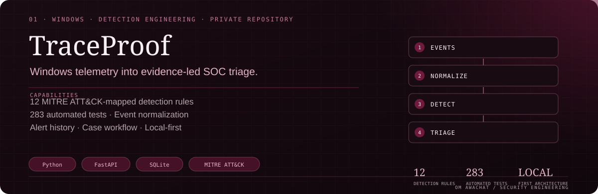
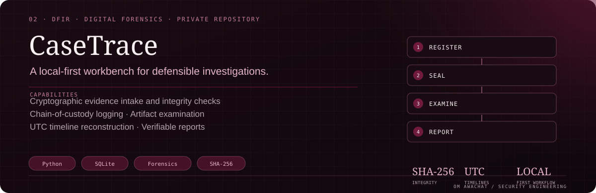
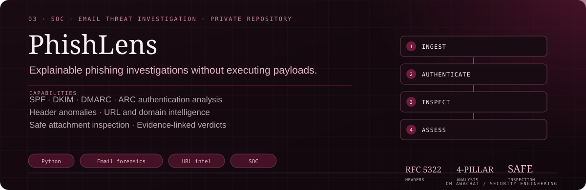
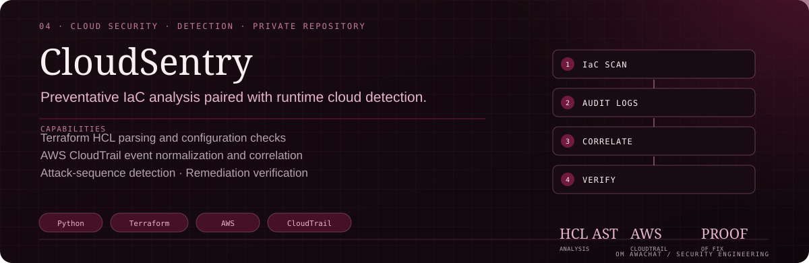
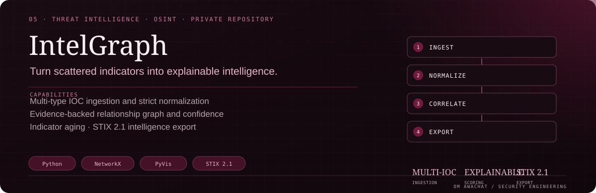

–
Cyber Security Intern · GPCSSI26
Gurugram Police
- Exposure to cybercrime investigation workflows, DFIR procedures and evidence analysis.
- Worked with investigative concepts including IPDR analysis, tower-location data and cyber-law context.
Cybersecurity Analyst · DFIR · SOC Operations
Cybersecurity · Digital Forensics · Threat Intelligence
I build evidence-led security tools across digital forensics, detection engineering, threat intelligence and AI application security — turning complex telemetry into clear investigations and useful analyst workflows.

01 About
I’m a cybersecurity practitioner focused on digital forensics, detection engineering and threat analysis.
My work is grounded in the practical side of security: collecting and preserving evidence, understanding endpoint and network activity, testing detection logic, and making investigation workflows easier to explain and reproduce.
I build local-first tools with Python and security-focused technologies. I’m especially interested in the intersection of DFIR, cloud security, threat intelligence and AI application security.
Integrity, provenance and chain of custody should be built into the workflow — not added after the investigation.
Signals should connect to source events, ATT&CK techniques and a repeatable analyst decision.
Local-first design, safe inspection and clear reporting matter as much as a polished interface.
Cybersecurity internship exposure with Gurugram Police (GPCSSI26), focused on investigative and DFIR workflows.
Penetration testing internship with Hacktify CyberSecurity.
Security testing and reconnaissance internship with ShadowFox.
Built and documented local-first security projects spanning endpoint detection, forensics and threat intelligence.
Foundation Service Director, Rotaract Club of Parul University.
02 Commit log
Loading contribution data…
Hover or focus a day to inspect it.
03 Selected work
A curated look at private GitHub projects spanning endpoint detection, digital forensics, email investigation, cloud security, threat intelligence and LLM red teaming. Source repositories remain private.

01 WINDOWS · DETECTION ENGINEERING
A local-first endpoint monitoring and detection engineering platform that turns Windows Event Log telemetry into evidence-led SOC triage.
Private GitHub repository · source not publicly accessible.

02 DFIR · DIGITAL FORENSICS
A local-first digital forensics workbench for multi-source evidence intake, provenance preservation, timeline reconstruction and defensible investigative reporting.
Private GitHub repository · source not publicly accessible.

03 SOC · EMAIL SECURITY
A defensive email investigation platform for phishing analysis, authentication forensics, URL and domain intelligence, safe attachment inspection and explainable SOC reporting.
Private GitHub repository · source not publicly accessible.

04 CLOUD SECURITY · DETECTION
An offline cloud security analysis platform bridging preventative Terraform Infrastructure-as-Code analysis with runtime AWS CloudTrail investigation.
Private GitHub repository · source not publicly accessible.

05 THREAT INTELLIGENCE · OSINT
A threat intelligence and OSINT platform for multi-type IOC ingestion, evidence-backed relationship analysis and explainable confidence scoring.
Private GitHub repository · source not publicly accessible.
06 AI SECURITY · LLM RED TEAMING
A local-first platform for testing LLM application security, evaluating attack paths and measuring layered defenses in RAG and tool-enabled applications.
Private GitHub repository · source not publicly accessible.
04 Toolkit
Hover or focus a highlighted tool to see how it fits into my security work.
Practical scripting for investigation and automation.
Evidence integrity and defensible reporting.
Detection logic mapped to adversary behaviour.
Packets, protocols and network context.
Understand binaries and suspicious behaviour.
Cloud posture, web risks and AI application testing.
OSINT / Threat Intelligence / IOC Analysis / Email Header Analysis / Cyber Kill Chain / Vulnerability Assessment / Evidence Provenance / Incident Handling
05 Recognition
EncipherX 4.0 · Nagpur Police
Recognized at the cybersecurity competition hosted with Nagpur Police.
Cyber Commando CTF26
Crypto Forensic Technology challenge.
Dark CTF · Crackon Community
Competitive CTF performance.
Security competitions
National and university-level challenges
06 Experience
–
Gurugram Police
–
ServiceNow University · SmartBridge
–
Hacktify CyberSecurity
–
ShadowFox
–
InternsUP
07 Contact
Interested in defensive security, digital investigations or building practical security tools? Let’s connect.